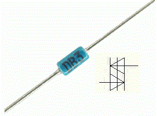
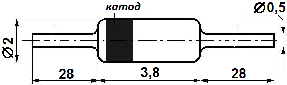
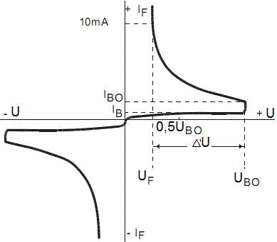

Динистор DB3
Динистор DB3 является двунаправленным диодом (триггер-диод), который специально создан для управления симистором или тиристором. В основном своем состоянии динистор DB3 не проводит через себя ток (не считая незначительный ток утечки) до тех пор, пока к нему не будет приложено напряжение пробоя.
В этот момент динистор переходит в режим лавинного пробоя и у него проявляется свойство отрицательного сопротивления. В результате этого на динисторе DB3 происходит падение напряжения в районе 5 В, и он начинает пропускать через себя ток, достаточный для открытия симистора или тиристора.

Рис. 1 - Внешний вид и условное графическое обозначение динистора DB3

Рис. 2 - Размеры динистора DB3
Цоколевка динистора DB3
Поскольку данный вид полупроводника является симметричным динистором (оба его вывода являются анодами), то нет абсолютно ни какой разницы, как его подключать.
Таблица 1
| Параметр | Значение | Условие | ||
|---|---|---|---|---|
| миним. | типовое | максим. | ||
| Напряжение пробоя UBO, В | 28 | 32 | 36 | C=22 нФ |
| Симметричное напряжение пробоя |UBO1 - U BO2|, В | 3 | C=22 нФ | ||
| Динамическое напряжение пробоя ΔU, В | 5 | |||
| Выходное напряжение UO, В | 5 | R=20 Ом | ||
| Ток включения тиристора I BO, мкА, | 50 | C=22 нФ | ||
| Время нарастания tr, мкс | 2 | |||
| Ток утечки I R, мкА, | 10 | VR=0,5VBO max | ||
| Максимальный ток I P, А, | 0,3 | |||

Рис. 2 - Вольт-амперная характеристики динистора DB3
Аналоги динистора DB3
- HT-32
- STB120NF10T4
- STB80NF10T4
- BAT54
Источники
ippart.com - DB3 DO35 Динистор
joyta.ru - Динистор DB3. Характеристики, проверка, аналог, datasheet